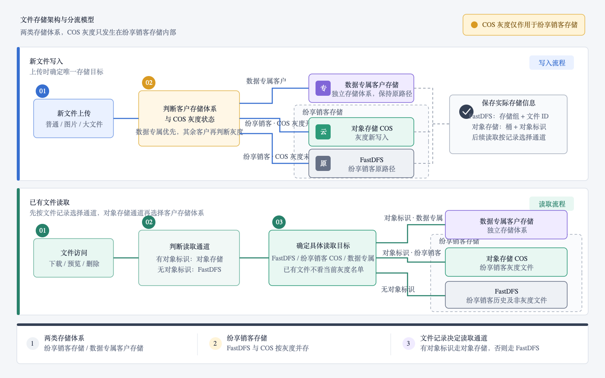
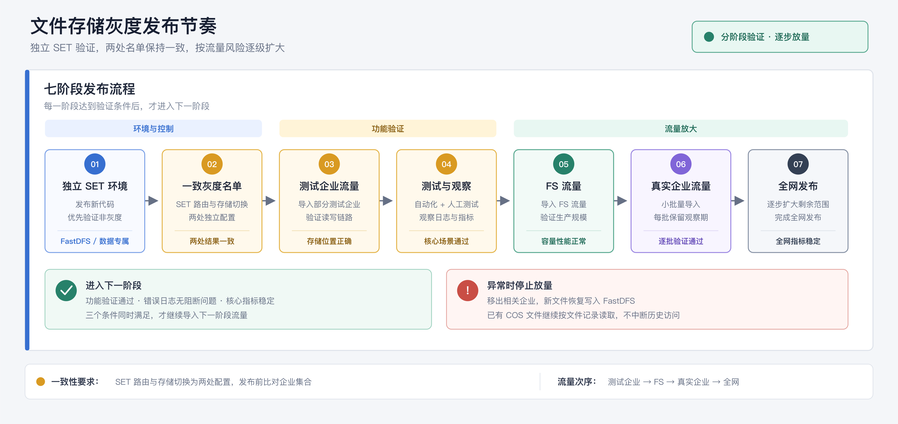
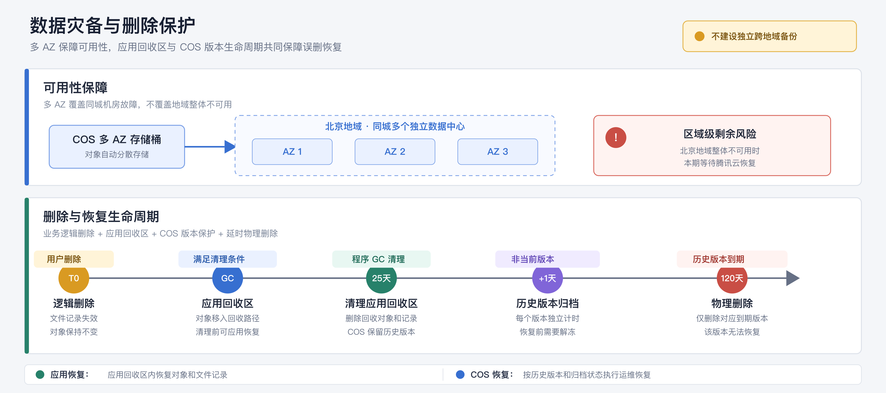
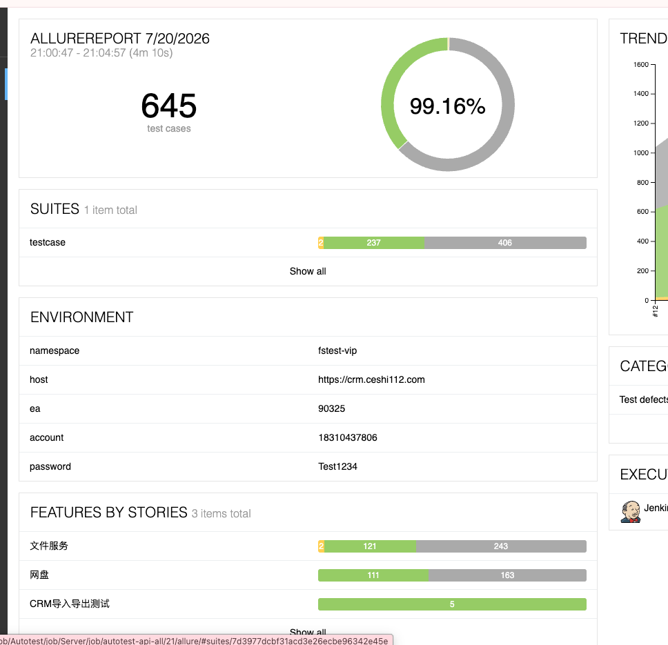

01背景介绍
1.1 改造目标
文件存储一共分为两类：纷享销客存储和数据专属客户存储。
- 纷享销客存储：原有 FastDFS，本次新增 COS，按客户进行灰度。
- 数据专属客户存储：保持原有独立存储方式，不参与本次 COS 灰度。
本次改造不要求迁移纷享销客存储中的存量 FastDFS 文件。存量文件继续保留在 FastDFS，新文件根据灰度策略选择 FastDFS 或 COS。
1.2 变更前后
| 对比项 | 变更前 | 变更后 |
|---|---|---|
| 纷享销客存储 | 使用 FastDFS | 增加 COS，可按客户灰度 |
| 数据专属客户存储 | 使用客户独立存储 | 保持原有方式，不参与灰度 |
| 存量文件 | 从原存储读取 | 继续从原存储读取，不要求迁移 |
1.3 整体模型

先区分客户属于哪套存储体系，再在纷享销客存储内选择 FastDFS 或 COS。方案遵循三个原则：
- 存储体系先确定：客户使用纷享销客存储或数据专属客户存储。
- 纷享销客存储内部灰度：新文件在 FastDFS 和 COS 中选择一个目标。
- 已有文件按记录读取：读取不看当前灰度状态，根据文件记录中是否存在对象存储信息选择通道。即使灰度名单发生变化，已有文件仍然访问原存储位置，避免读取目标随名单变化，最大程度保证文件访问的可用性。
因此，同一纷享销客存储客户可以同时存在存量 FastDFS 文件和新 COS 文件，业务侧不需要感知文件的物理位置。
1.4 本次改造边界
本次改造只调整纷享销客存储内部的新文件写入方式，不改变现有业务接口。
| 评审项 | 说明 |
|---|---|
| 改造范围 | 仅纷享销客存储客户参与灰度，数据专属客户保持原有方式 |
| 数据策略 | 存量文件不迁移；新文件单写 FastDFS 或 COS，不做双写 |
| 长期状态 | 同一客户可以同时存在存量 FastDFS 文件和新 COS 文件，业务侧无感知 |
| 灰度退出 | 新文件恢复写入 FastDFS，已有 COS 文件继续正常访问 |
| 异常处置 | 关闭灰度，停止新增 COS 写入；已有 COS 文件继续保留和访问，不做回迁 |
1.5 核心业务变化
1.5.1 业务影响范围
总体来说，业务侧对本次改动无感知。上传、下载、预览、转正式、删除等操作方式和现有业务接口保持不变，存储选择由文件服务内部完成。
| 业务操作 | 变更后的处理方式 | 用户感知 |
|---|---|---|
| 普通上传 | 先确定客户存储体系，再选择具体存储 | 无 |
| 文件下载和预览 | 根据文件记录中的实际存储信息读取 | 无 |
| 临时文件转正式 | 继承临时文件的实际存储体系，按源文件类型复制、复用或重新保存 | 无 |
| 文件分片上传 | 与普通上传使用同一存储选择规则，开始后保持一致 | 无 |
| 删除和恢复 | 先执行业务逻辑删除和应用回收，再由 COS 版本控制和生命周期提供延时保护 | 无 |
| 文件访问地址 | 根据文件记录生成对应存储的访问地址 | 无 |
1.5.2 普通上传
上传时按以下顺序选择存储：
- 数据专属客户写入数据专属客户存储。
- 纷享销客存储客户命中灰度名单时写入 COS。
- 其他纷享销客存储客户继续写入 FastDFS。
第 1 条的优先级最高。灰度名单只改变纷享销客存储客户的新文件写入目标，不会改变数据专属客户的存储归属。
系统只写一个目标，不会同时保存 FastDFS 和 COS 两份文件。文件写入成功后，系统保存用于后续定位文件的元数据：
- FastDFS 文件：存储组和文件 ID。
- 对象存储文件：存储桶、对象名和对象存储返回的类型信息。
1.5.3 临时文件转正式
临时文件首次上传时确定存储体系。转正式时以临时文件记录的实际存储信息为准，不再根据转正式时的灰度名单重新选择 FastDFS 或 COS。具体处理方式如下：
- 对象存储普通文件：在同一客户存储体系内复制对象，并生成正式文件记录。纷享销客 COS 文件从临时桶复制到正式桶，存储体系不变。
- FastDFS 普通文件：满足复用条件时复用原物理文件；其他情况会读取临时文件并重新保存到 FastDFS。
- 需要图片处理的文件：读取原图，完成格式、尺寸或缩略处理后生成新文件，新文件继续写入原图所在的存储体系。
1.5.4 文件分片上传
分片上传与普通上传使用同一存储选择顺序：先确定客户存储体系，再判断纷享销客存储客户是否命中 COS 灰度。文件在开始上传时确定目标存储，后续分片及完成动作根据开始阶段保存的文件记录继续执行。
在客户存储体系不发生变更的前提下，即使上传过程中调整灰度名单，已经开始的文件也不会在 FastDFS 和纷享销客 COS 之间改变存储。客户存储体系变更不在本期灰度操作范围内，发生时必须先完成数据迁移。
1.5.5 删除和文件引用
删除操作根据文件记录访问对应存储。多个业务记录引用同一个 COS 对象时，系统查询同一对象的其他引用；仍有引用时不处理物理对象，没有其他引用时才进入应用回收和后续物理清理流程。
1.6 数据读取
1.6.1 读取方式
文件服务先根据文件记录选择 FastDFS 或对象存储通道：
| 文件记录 | 读取方式 |
|---|---|
| 存在对象存储对象标识 | 进入对象存储通道 |
| 不存在对象存储对象标识 | 从 FastDFS 读取 |
进入对象存储通道后，再根据客户存储体系访问纷享销客 COS 或数据专属客户存储。客户存储体系变更必须配套数据迁移，不属于本期灰度范围。
1.6.2 存量数据兼容
存量 FastDFS 文件本来就没有对象存储对象标识，会继续进入 FastDFS 读取通道。本次不需要全量回填新字段，也不需要为了兼容读取而迁移存量文件。
02准备事项
2.1 研发与协同准备
| 准备事项 | 要求 | 时间 |
|---|---|---|
| 程序改造与验证 | 已完成程序改造，并通过人工测试和自动化核心场景测试；线下环境已运行近一个月，期间代码有调整，但整体逻辑和架构保持不变 | 已完成当前阶段验证 |
| SET 化环境部署与测试 | 完成独立 SET 环境部署、配置核对和基础测试 | 本周 |
| ABU 客户灰度通知 | 确认最终阶段客户范围并完成灰度通知 | 最终灰度阶段前一周 |
2.2 环境与存储配置
- 对象存储按照原 FastDFS 的九套分区架构创建九套存储配置，每套包含正式桶和临时桶两个独立的物理桶。
- 九套存储资源均已准备完毕，桶权限、网络、地域、访问凭证和代理配置已完成。
- 正式桶和临时桶已按方案开启多 AZ、版本控制及对应生命周期；临时桶已配置未完成分片上传的过期清理规则。
2.3 名单、观测与责任
- 灰度客户必须属于纷享销客存储；如果同时命中数据专属名单和 COS 灰度名单，以数据专属存储为先。
- SET 路由与存储切换是两处独立配置，发布前必须核对企业集合完全一致。
- 准备监控看板、告警阈值、每批观察时长和停止灰度的操作权限。
- 操作人：刘云松
- 验证人：刘云松、安宜龙
- 观测人：刘云松、安宜龙
03发布节奏
3.1 发布阶段
本次发布采用独立 SET 环境承接流量，按照"测试企业、FS 流量、真实企业、全网"的顺序逐级扩大。每个阶段验证通过后，才能进入下一阶段。

3.2 放量条件
- SET 化路由和存储切换由两套配置管理，应用代码无法自动比对。发布前必须校验两处企业集合完全一致，变更时作为同一个发布动作执行。
- 每次只推进一个阶段，不同时导入 FS 流量和真实企业流量。
- 真实企业按批次导入，每批完成自动化验证、人工验证和日志观察后再扩大。
- 测试企业流量导入前，必须在发布单中填写错误率、响应时间、内存和观察时长阈值；没有明确阈值时不得进入下一阶段。
- 任一阶段出现异常，立即停止新增流量并移出相关企业；新文件恢复写入 FastDFS，已有 COS 文件仍按文件记录读取。
- 全网发布是逐步扩大后的最终状态，不采用一次性全量放开的方式。
04操作说明
4.1 灰度调整与暂停
扩大灰度时，将同一批企业同时加入 SET 路由和存储切换配置，确认两处配置生效且企业集合一致后，再导入对应流量。
出现异常时，从两处配置同步移除客户或关闭灰度规则。配置发布和服务节点接收存在传播时延，以实际节点配置生效为准：
- 新文件恢复写入 FastDFS。
- 已有 FastDFS 文件继续读取 FastDFS。
- 已有 COS 文件继续读取 COS。
- 对象存储服务和读取能力继续保留。
4.2 观察指标
重点观察：
- 服务错误日志数量。
- Tomcat 日志中的响应时间和响应失败数量。
- 服务内存和 CPU 指标。
每批放量后持续观察以上指标，出现明显异常时暂停放量。
4.3 数据灾备与删除保护
本节只说明纷享销客 COS 的灾备和删除保护。数据专属客户存储继续执行客户自己的灾备方案，不纳入本次改造。
删除保护包含两层：应用侧维护业务回收记录和回收对象；COS 存储桶侧开启版本控制和生命周期。应用代码不负责创建或修改 COS 存储桶配置。
4.3.1 灾备范围
本方案使用 COS 多 AZ 覆盖单机房和单可用区故障，不将其视为跨地域备份。
本期不建设跨地域复制，也不建设另一套独立冷备份。该决策意味着：
- 单机房或单可用区故障由多 AZ 自动处理。
- 北京地域整体不可用时，本系统没有可主动切换的异地副本，需要等待腾讯云恢复服务。
- 版本历史进入归档存储，仍属于同一地域、同一存储体系，不属于独立备份。
4.3.2 删除保护机制
删除采用"业务逻辑删除 + 应用回收区 + COS 版本保护 + 延时物理删除"：
- 用户删除文件后，文件记录先失效，此时不删除 COS 对象。
- 程序 GC 在文件达到清理条件且没有其他引用后，将对象和文件记录移入应用回收区；默认 25 天后清理。清理前可通过应用恢复，清理后通过 COS 历史版本恢复。
- COS 开启版本控制后，应用的移动和删除动作会产生删除标记并保留历史版本。每个版本从成为非当前版本时开始独立计时。
- 非当前版本满 1 天后转为归档存储，满 120 天后永久删除，最后清理已失效的删除标记。
本方案中的“应用回收区”和“COS 版本恢复”是两种不同能力。前者由文件服务程序 GC 实现，后者由 COS 存储桶配置提供。

4.3.3 120 天生命周期
| 时间 | 文件状态 | 存储方式 | 是否可恢复 |
|---|---|---|---|
| 用户删除时 | 文件记录失效，COS 对象保持不变 | 原存储状态 | 可以 |
| 程序 GC | 符合条件后进入应用回收区，默认 25 天后清理 | 应用回收区；COS 版本保护 | 清理前可应用恢复，清理后可通过 COS 版本恢复 |
| 任一版本成为非当前版本满 1 天 | 历史版本仍存在 | 转为归档存储（多 AZ） | 可恢复，需要先解冻 |
| 任一非当前版本满 120 天 | 该历史版本达到保留期限 | 永久删除该版本并清理失效删除标记 | 不可通过该版本恢复 |
COS 生命周期从某个对象版本成为非当前版本时开始计算，不从用户逻辑删除时间或最初上传时间计算。原路径和应用回收路径下的历史版本可能在不同时间开始计时，因此各自计算 120 天保留期。
4.3.4 恢复方式
- 应用回收区恢复：对象和文件记录仍在应用回收区时，使用现有恢复能力将对象移回原路径，这是优先使用的恢复方式。
- COS 历史版本恢复：应用回收记录已清理，或需处理底层误删时，由运维根据对象路径和版本恢复指定历史版本，并同步恢复业务记录。
- 归档版本恢复：先提交解冻任务，对象可读后再执行版本和业务记录恢复。
- 超过版本保留期：对应历史版本已物理删除，无法通过该版本恢复。
归档存储恢复需要等待，实际耗时取决于当期 COS 支持的取回模式和对象规模。因此，“120 天内可恢复”表示在历史版本保留期内可发起恢复，不代表立即可用。
4.3.5 配置约束
- 正式桶和临时桶按本方案开启多 AZ 和版本控制，生产建桶前确认开启时机、可变更范围和关闭限制。
- COS 版本控制和生命周期由存储桶配置管理，不在应用配置文件中设置；应用回收区由程序 GC 管理。
- 业务删除 COS 对象时不得指定版本 ID；指定版本 ID 会永久删除该版本。
- 对永久删除指定版本的控制台和 API 权限单独管理，不授予日常业务账号。
- 生命周期规则必须管理历史版本，而不是只管理当前版本。
- 生命周期规则需要同时配置历史版本到期删除和失效删除标记清理。
- 临时桶需要单独确认是否纳入 120 天恢复范围；不能假定正式桶的版本控制和生命周期自动作用于临时桶。
- 临时桶必须配置未完成分片上传的过期清理规则。
- 多 AZ、版本控制、存储类型和生命周期的开启条件、计费规则及可变更限制，需要在生产桶创建前根据当期腾讯云官方文档和控制台再次确认。
4.3.6 恢复目标与风险
| 场景 | 处理方式 | 恢复目标 |
|---|---|---|
| 单机房或单可用区故障 | COS 多 AZ 自动处理 | 业务无需人工切换 |
| 误删除，仍在应用回收区 | 通过现有应用恢复能力恢复对象和文件记录 | 程序 GC 清理前恢复 |
| 应用回收记录已清理，历史版本尚未归档 | 运维恢复指定历史版本和业务记录 | 历史版本保留期内恢复 |
| 历史版本已经归档 | 先解冻历史版本，再恢复对象和业务记录 | 恢复时间取决于取回模式 |
| 北京地域 COS 整体不可用 | 等待腾讯云恢复 | 本期没有跨地域自主恢复能力 |
| 历史版本达到自身 120 天保留期 | 该历史版本已物理删除 | 无法通过该版本恢复 |
官方依据： COS 多 AZ 特性概述 · COS 版本控制概述 · COS 配置生命周期 · COS 存储类型概述
05验证说明
5.1 核心验证场景
| 场景 | 预期结果 |
|---|---|
| 非灰度纷享销客存储客户上传 | 继续写入 FastDFS |
| 灰度纷享销客存储客户上传 | 新文件写入 COS |
| 数据专属客户上传 | 继续写入数据专属客户存储 |
| 灰度前的存量文件 | 继续从 FastDFS 读取 |
| 灰度后的新文件 | 从 COS 读取 |
| 客户退出灰度 | 新文件写 FastDFS，已有 COS 文件仍可读取 |
| 普通临时文件转正式 | 继承临时文件的存储体系，按源文件类型复制、复用或重新保存 |
| 图片临时文件转正式 | 图片处理后的文件继续写入原图所在的存储体系 |
| 临时上传后调整灰度名单 | 转正式仍沿用临时文件的实际存储体系 |
| 文件上传中调整灰度 | 已开始的上传继续在原存储完成 |
| 文件逻辑删除 | 文件对业务不可见，COS 对象不被立即删除 |
| 数据专属客户回归 | 上传、读取、转正式和删除保持原行为 |
| 文件进入应用回收区 | 回收对象和回收记录一致，原路径版本受 COS 保护 |
| 应用回收区恢复 | 对象和文件记录恢复到原位置，文件可正常访问 |
| COS 历史版本恢复 | 指定历史版本和业务记录恢复正常 |
| 归档历史版本恢复 | 完成版本定位、解冻和业务记录恢复 |
| 失败分片上传清理 | 未完成分片在临时桶生命周期到期后被清理 |
5.2 验证内容
每个场景需要同时确认：
- 用户操作成功，文件内容正确。
- 文件记录包含足以定位目标存储和对象的信息。
- 文件大小、校验值和图片信息正确。
- 删除后没有误删共享文件，也没有异常残留增长。
- 日志能够定位实际访问的存储和失败原因。
- 服务错误率、响应时间和内存没有明显恶化。
5.3 当前验证状态
ceshi112 环境人工测试通过，文件存储改造的自动化核心场景测试通过。
已完成
- ceshi112 环境人工测试通过。
- 文件存储改造的自动化核心场景测试通过。
- 新文件三类写入目标、已有文件读取及分片上传验证。
- 普通上传与分片开始使用同一存储选择规则。
- 分片开始后调整灰度名单，后续仍按原存储完成。
- 对象存储配置更新和下载期间配置保护。
上线前待完成
- 生产 COS 配置完整性核对及生产流量导入前的冒烟验证。
- 暂停灰度后的混合读取和数据专属客户回归。
- 正式桶、临时桶、版本控制和生命周期配置核对。
- 应用回收区、COS 历史版本和归档版本恢复演练。
- 全量下载、范围下载的日志、指标与告警验证。
- SET 路由与存储切换企业集合一致性检查。
- 填写各阶段阈值、观察时长和停止放量条件。

5.4 灰度通过标准
- 开启 COS 灰度前，非灰度 FastDFS 企业和数据专属客户的上传、读取、预览、转正式和删除保持正常。
- 所有核心业务场景通过。
- 文件记录可以准确定位对应存储和对象。
- 暂停灰度后，新文件恢复写入 FastDFS。
- 暂停灰度后，已有 COS 文件仍可正常读取和管理。
- 数据专属客户没有行为变化。
- 完成应用回收区、COS 历史版本和归档恢复演练。
- SET 路由与存储切换两处企业集合完全一致。
- 北京地域整体不可用时无跨地域恢复能力的风险获得评审确认。
- 错误率、响应时间、内存和观察时长阈值明确并满足要求。
- 暂停灰度、恢复和回滚决策责任人明确。
06回滚方案
6.1 回滚原则
本方案不建设 COS 到 FastDFS 的数据回迁能力。回滚只停止后续新文件写入 COS，不会改变已经写入 COS 的文件位置。已经产生 COS 数据后，必须继续保留对象存储读取和管理能力。
新代码上线后、开启 COS 灰度前，必须优先验证两类非灰度请求：
- 非灰度纷享销客存储企业的上传、读取、预览、转正式和删除继续使用 FastDFS，业务结果正常。
- 数据专属客户的上传、读取、预览、转正式和删除继续使用原有数据专属存储，业务结果正常。
两类请求验证通过后才能开启 COS 灰度。这是本方案能够通过关闭灰度控制新增影响的前提。
6.2 尚未产生 COS 数据
如果灰度尚未开启，或者确认没有产生任何 COS 文件，可以直接关闭灰度并回滚应用版本。此时不存在依赖新代码读取的纷享销客 COS 文件。
6.3 已经产生 COS 数据
先执行二级回滚：
- 关闭灰度，新文件恢复写入 FastDFS。
- 保留现有 COS 读取能力和对象存储配置。
- 验证已有 COS 文件继续可读、可删除、可转正式。
- 继续保留 FastDFS 与 COS 混合存储，不迁移已有 COS 文件。
6.4 回滚触发条件
出现以下情况时暂停灰度并评估回滚：
- 上传、读取、复制或删除错误率持续超过阈值。
- 服务内存、GC、超时明显恶化。
07风险评估及应对措施
| 风险 | 可能表现 | 应对措施 |
|---|---|---|
| 文件操作异常 | 上传、下载、预览、转正式或删除出现异常。这类问题表现直接，通常会在测试或小范围灰度阶段暴露 | 完成人工测试和自动化测试；按测试企业、FS 流量、真实企业逐步放量；发现异常立即关闭灰度 |
| 生产流量下性能波动 | 测试环境无法完全模拟生产请求量，放量后可能出现响应时间增加、内存或 CPU 上升 | 每批保留观察时间，关注错误日志、Tomcat 响应时间和失败数量、服务内存和 CPU；指标异常时停止放量 |
| 服务版本无法完全回滚 | 产生 COS 文件后，不能回滚到不支持 COS 读取的旧版本 | 开启灰度前优先验证非灰度 FastDFS 企业和数据专属客户；异常时关闭灰度，新文件恢复写入 FastDFS，已有 COS 文件继续由新版本读取 |